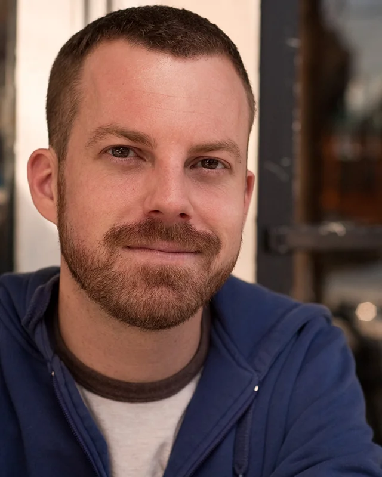
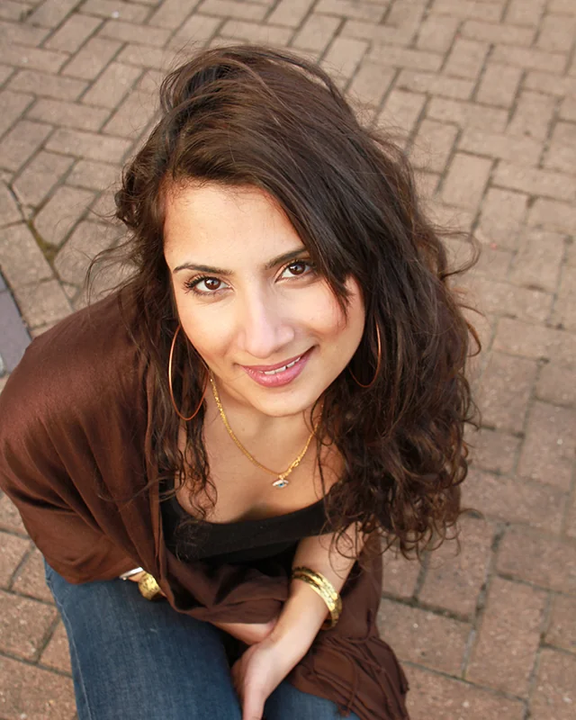
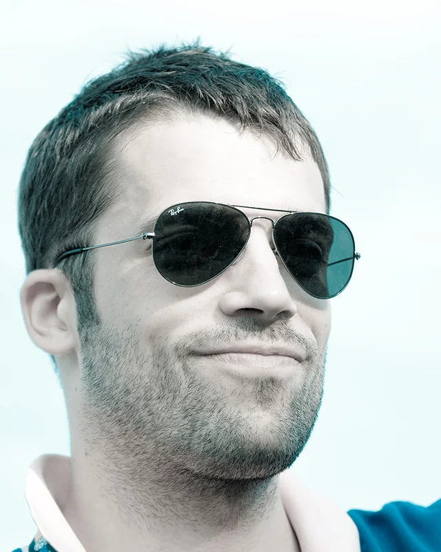
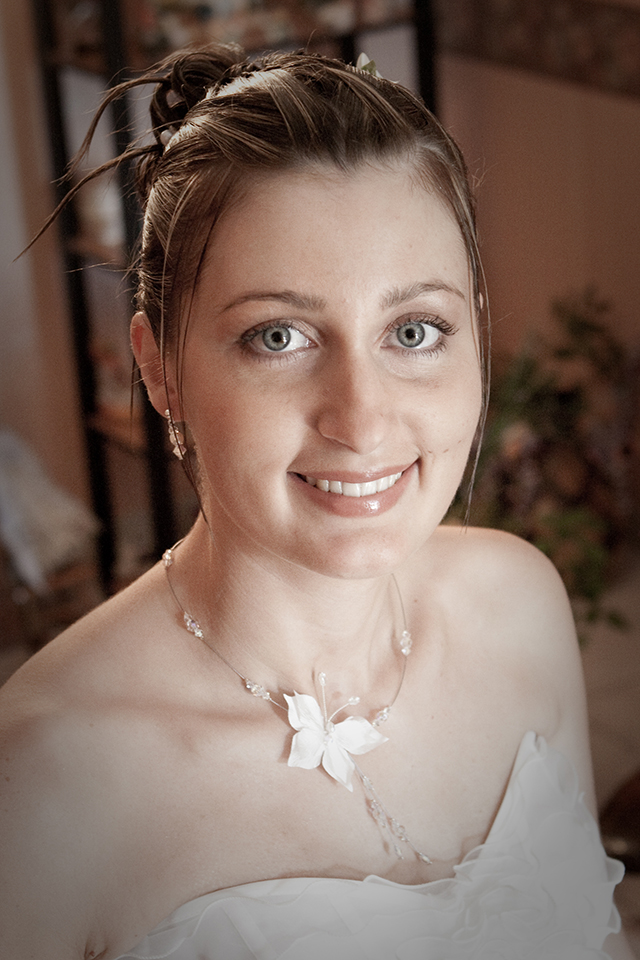
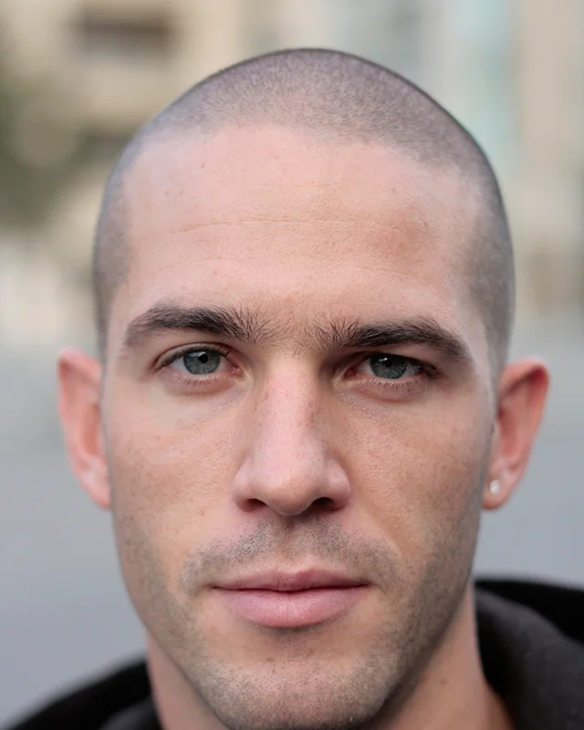
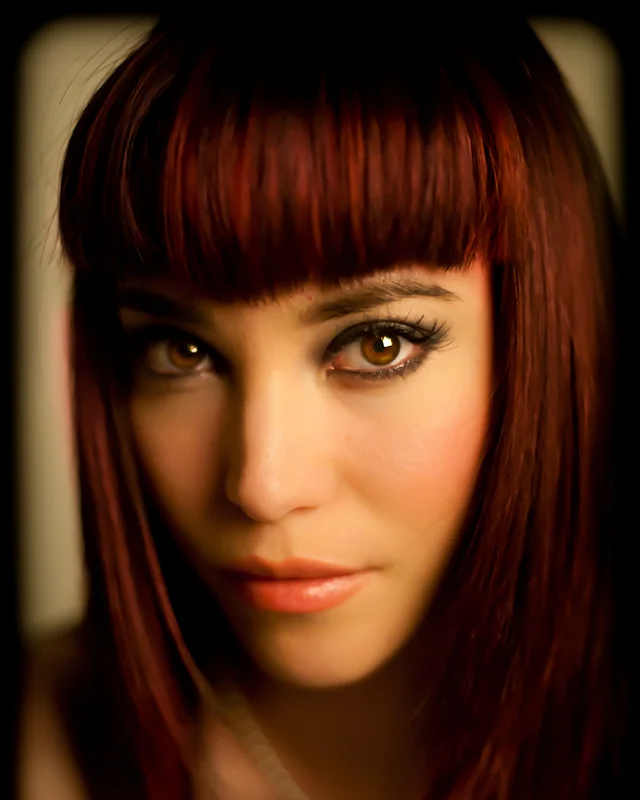
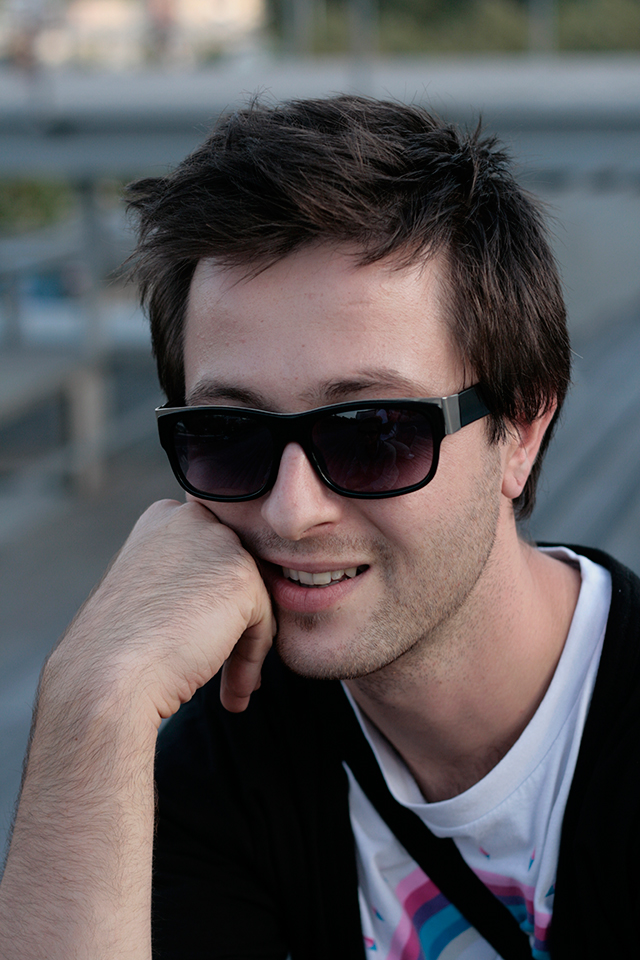
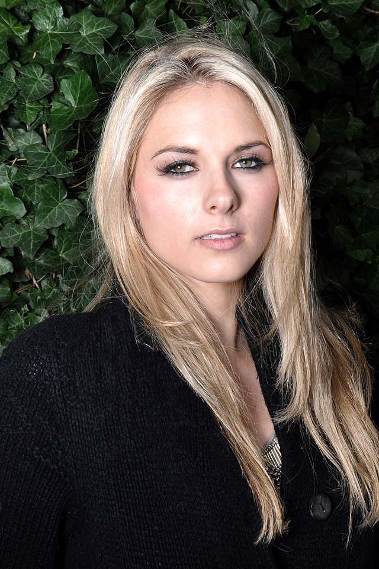
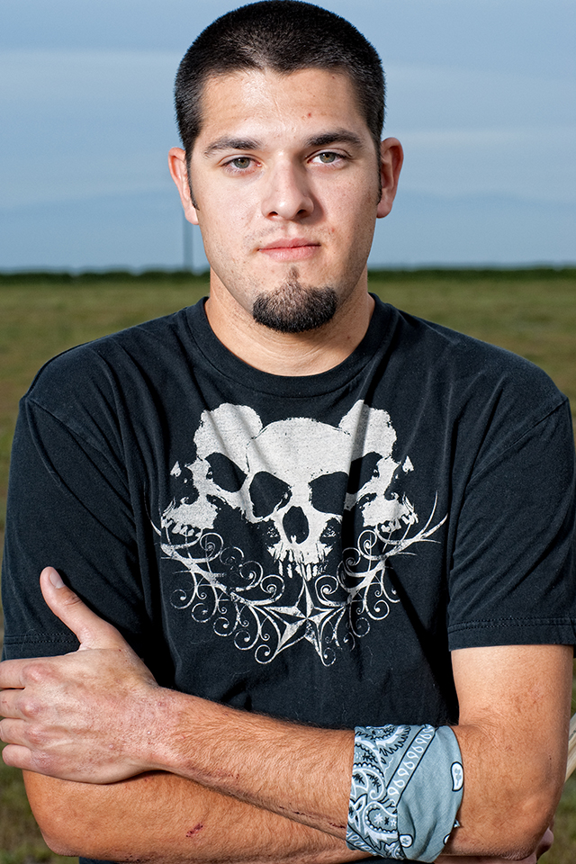

Foto mənbələri.
Portretlərin müəllifləri, orijinal mənbələri və lisenziyaları aşağıdadır.
Foto 01
“beautiful woman” — Lin Fuchshuber (River Beach) on Flickr
Orijinal foto · Flickr · CC BY 2.0
Sayt üçün 4:5 kəsim və WebP optimallaşdırması.

Foto 02
“Every now and then I get a little bit terrified but then I see the look in your eyes” — David Goehring (CarbonNYC) on Flickr
Orijinal foto · Flickr · CC BY 2.0
Sayt üçün 4:5 kəsim və WebP optimallaşdırması.

Foto 03
“Indian princess - Sunni Balcony shoot” — David Long (TriggerHappyDave) on Flickr
Orijinal foto · Flickr · CC BY 2.0
Sayt üçün 4:5 kəsim və WebP optimallaşdırması.

Foto 04
“Solidays2009_-42” — julien haler (Julien Haler) on Flickr
Orijinal foto · Flickr · CC BY 2.0
Sayt üçün 4:5 kəsim və WebP optimallaşdırması.

Foto 05
“MariageBlandineSeb-1003” — julien haler (Julien Haler) on Flickr
Orijinal foto · Flickr · CC BY 2.0
Orijinal JPEG; səhifədə CSS ilə 4:5 çərçivədə göstərilir.

Foto 06
“Two distinct sides on his face” — julien haler (Julien Haler) on Flickr
Orijinal foto · Flickr · CC BY 2.0
Sayt üçün 4:5 kəsim və WebP optimallaşdırması.

Foto 07
“Pretty redhead girl with amazing eyes” — Chris Willis (tibchris) on Flickr
Orijinal foto · Flickr · CC BY 2.0
Sayt üçün 4:5 kəsim və WebP optimallaşdırması.

Foto 08
“_MG_5348” — julien haler (Julien Haler) on Flickr
Orijinal foto · Flickr · CC BY 2.0
Orijinal JPEG; səhifədə CSS ilə 4:5 çərçivədə göstərilir.

Foto 09
“Orbis Ring Flash” — Paul Stevenson (Paul Stevenson) on Flickr
Orijinal foto · Flickr · CC BY 2.0
Orijinal JPEG; səhifədə CSS ilə 4:5 çərçivədə göstərilir.

Foto 10
“Automatic Redial 2010 Promo (32)” — Robert Bejil (Robert Bejil Photography) on Flickr
Orijinal foto · Flickr · CC BY 2.0
Orijinal JPEG; səhifədə CSS ilə 4:5 çərçivədə göstərilir.